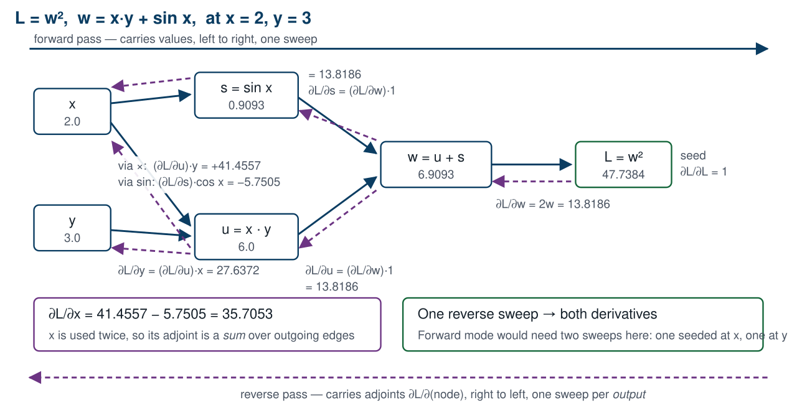
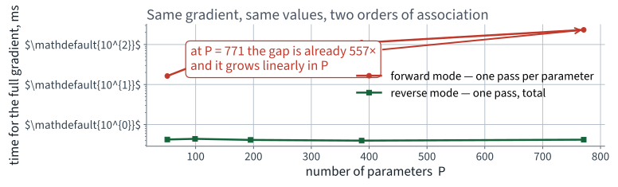
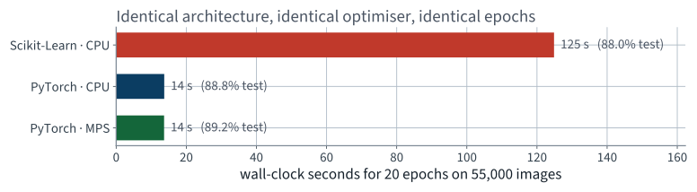
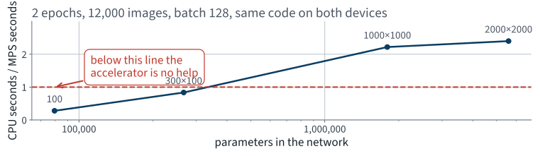
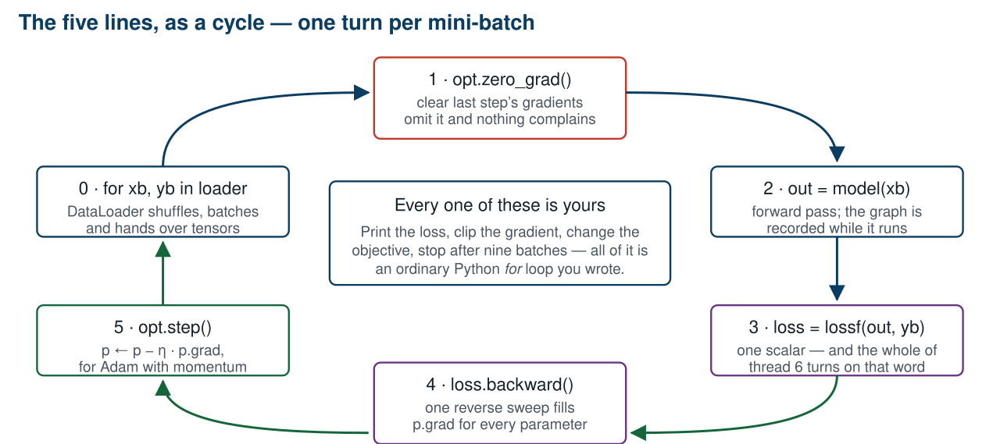
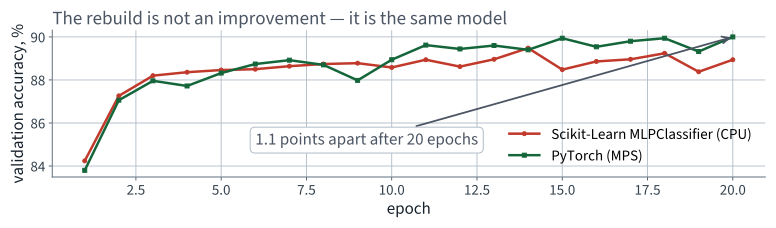
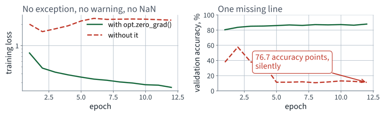
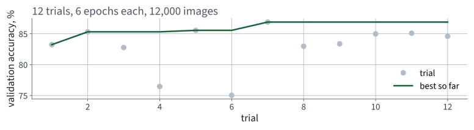

Application 6 · Fashion MNIST
Lecture 12 · Fix Thread 6 Géron Ch. 9–10
Applications of Machine Learning
BSc Mathematics of Artificial Intelligence · Third year
| Model | Test accuracy | Wall clock |
|---|---|---|
| Always predict one class | 10.0%% | — |
| MLP, 266,610 parameters, 20 epochs | 88.02%% | 125 s |
The accuracy is fine. Everything else is the problem.
Four walls, and the same wall underneath all four: the training loop was written for you.
Mathematical thread 6
20 minutes
You called clf.fit().
It computed 266,610 partial derivatives, on every batch, 20 times over. How?
| Method | Cost for $P$ parameters | Exact? |
|---|---|---|
| By hand | your afternoon, per architecture | yes, if you are careful |
| Finite differences | $P+1$ evaluations | no — truncation and cancellation |
| Symbolic | expression blow-up | yes |
| Automatic differentiation | see below | to machine precision |
Automatic differentiation is neither symbolic nor numerical. It differentiates the program, operation by operation, using the chain rule and nothing else.
A network is a composition. Write the loss as
where $J_i$ is the Jacobian of $f_i$ evaluated at the point the forward pass reached. Every layer contributes one factor.
Matrix multiplication is associative.
Same number. Wildly different cost.
Pick a direction $\mathbf{v}$ in input space. Carry $\dot{u} = \partial u / \partial v$ alongside every intermediate value $u$:
To get the full gradient with respect to $n$ inputs you run it $n$ times, once per coordinate direction.
Pick a direction in output space — for a scalar loss there is only one, and it is 1. Carry $\bar{u} = \partial L / \partial u$ backwards:
| Mode | Sweeps needed | Cheap when |
|---|---|---|
| Forward | $n$ — one per input | few inputs, many outputs |
| Reverse | $m$ — one per output | many inputs, few outputs |
Each sweep costs a small constant times one forward evaluation. The constant is around 2 to 4 and does not depend on $n$ or $m$.
That constant is the reason the backward pass costs about what the forward pass costs, no matter how many parameters there are.
Two inputs, one output. Differentiate it by hand first:
Everything on the next four slides is this function. Small enough to hold in your head; general enough that nothing about the argument changes at 266,610 parameters.

One sweep left to right fills in the values. One sweep right to left fills in every derivative.
| Node | Expression | Value |
|---|---|---|
| $x$ | input | 2.0 |
| $y$ | input | 3.0 |
| $u$ | $x \cdot y$ | 6.0000 |
| $s$ | $\sin x$ | 0.9093 |
| $w$ | $u + s$ | 6.9093 |
| $L$ | $w^2$ | 47.7384 |
Six nodes, evaluated once each, in topological order. This is exactly what running the model does — and PyTorch records the graph while it happens.
| Adjoint | Computed as | Value |
|---|---|---|
| $\partial L/\partial L$ | the seed | 1 |
| $\partial L/\partial w$ | $2w$ | 13.8186 |
| $\partial L/\partial u$ | $(\partial L/\partial w) \cdot 1$ | 13.8186 |
| $\partial L/\partial s$ | $(\partial L/\partial w) \cdot 1$ | 13.8186 |
| $\partial L/\partial y$ | $(\partial L/\partial u)\, x$ | 27.6372 |
| $\partial L/\partial x$ | $(\partial L/\partial u)\, y + (\partial L/\partial s)\cos x$ | 35.7052 |
Six lines, one pass, both derivatives.
$x$ is used twice — once by the product and once by the sine.
A node's adjoint is the sum of the contributions along its outgoing edges.
That is it. Reverse-mode autodiff is a topological sort, a table of local derivatives, and this sum. There is no other idea in it.
>>> x = torch.tensor(2.0, requires_grad=True)
>>> y = torch.tensor(3.0, requires_grad=True)
>>> L = (x * y + torch.sin(x)) ** 2
>>> L.backward()
>>> x.grad.item(), y.grad.item()
(35.705345, 27.637190)
By hand: $2w(y + \cos x) = $ 35.7052 and $2wx = $ 27.6372.
They agree to machine precision. A cheap, decisive check that the library did what the mathematics says — and the same habit as Lecture 2's orthogonality test.
| Mode | Sweeps |
|---|---|
| Forward — one per input | 266,610 |
| Reverse — one per output | 1 |
Reverse mode is not a good choice. It is the only viable one, by a factor of 266,610.
Not a convention, and not an accident of notation.
Small networks, where forward mode can actually be run to completion. Same loss, same point, both modes.
| Parameters | Reverse, whole gradient | Forward, whole gradient | Ratio |
|---|---|---|---|
| 51 | 0.24 ms | 9.3 ms | 39× |
| 99 | 0.22 ms | 16.8 ms | 76× |
| 195 | 0.26 ms | 35.5 ms | 137× |
| 387 | 0.21 ms | 73.1 ms | 341× |
| 771 | 0.27 ms | 151.7 ms | 572× |
The two columns compute the same numbers — they agree to 2.23517e-08 — so this is a measurement of cost, not of quality.

Extrapolate the red line to 266,610 parameters. That is why nobody trains networks in forward mode.
| Quantity | Value | How obtained |
|---|---|---|
| Parameters | 266,610 | counted |
| Reverse mode, the whole gradient | 1.33 ms | measured |
| Forward mode, one direction | 0.78 ms | measured |
| Forward mode, all 266,610 | 3.5 minutes | projected, not run |
Two measured per-pass costs and one multiplication you can check. We did not run the last row, and the slide says so — that is the honest form of the claim.
The previous lecture's run took 20 epochs of 430 batches — 8600 gradients in total, in 125 seconds.
| The same 8600 gradients… | Projected wall clock |
|---|---|
| in forward mode, at the measured per-pass cost | 21 days |
| in reverse mode | 125 seconds, measured |
The associativity of matrix multiplication is the only reason this course exists.
The 1986 paper's contribution was noticing that this was cheap enough to be practical, not inventing the chain rule.
Memory.
Every Jacobian in $J_3 J_2 J_1$ is evaluated at the point the forward pass reached, so every intermediate activation has to be kept until the backward pass consumes it.
Point 3 is the one most treatments never state explicitly. It is the whole reason the field works.
Part two
20 minutes · what the number cost you
Accuracy a good sorting machine would need: %
Accuracy I expected from that model: %
Best accuracy I obtained: %
| Reality | Test accuracy |
|---|---|
| Always one class | 10.0%% |
| Hand-tuned MLP | 88.02%% |
Score them out loud. Most rooms guess too low against the baseline and too high against the state of the art — and being wrong in both directions at once is worth a minute's discussion.
88.02%% against a 10.0%% baseline is a real result.
Unlike Lecture 2, nothing here was measured dishonestly. The split was clean, the validation set was separate, the test set was touched once.
The bug is that you cannot do anything else.
| Same architecture, same optimiser, same 20 epochs | Wall clock | Test accuracy |
|---|---|---|
| Scikit-Learn, CPU | 125 s | 88.02%% |
| PyTorch, CPU | 14 s | 88.84%% |
| PyTorch, MPS | 14 s | 89.24%% |
9.1× faster, for the same model.
Look at rows two and three. The accelerator bought 1.00× — that is, nothing. All of the speed-up is the framework, none of it is the device. Two slides from now we find out why, and it is not a disappointment.

The accuracies are within a point of each other. Only the clock moved — and only between the first bar and the other two.
Not from the device. From how the arithmetic is dispatched.
Same architecture, same optimiser, same epochs, same arithmetic — and 125 seconds against 14, both on the CPU.
A forward pass is $\phi(\mathbf{X}\mathbf{W} + \mathbf{b})$, repeated, and a GPU is a machine for large matrix products and very little else.
Ours are not large.
266,610 parameters and a batch of 128 is a matrix product that finishes before the cost of dispatching it has been paid. So we measured where the crossover is: same code, same data, widening the layers.

At our size the ratio is below 1: the accelerator is slower. It only starts winning once each batch carries enough arithmetic to cover the dispatch.
| Hidden layers | Parameters | CPU | MPS | Ratio |
|---|---|---|---|---|
| 100 | 79,510 | 0.13 s | 0.45 s | 0.28× |
| 300, 100 | 266,610 | 0.21 s | 0.25 s | 0.84× |
| 1000, 1000 | 1,796,010 | 0.62 s | 0.28 s | 2.22× |
| 2000, 2000 | 5,592,010 | 1.03 s | 0.43 s | 2.40× |
2 epochs on 12,000 images, batch 128, identical code on both devices. Measured on an Apple MPS backend; a Colab T4 has a different crossover, in the same place in the argument.
>>> MLPClassifier(hidden_layer_sizes=(300, 100), loss="mae")
TypeError: MLPClassifier.__init__() got an unexpected
keyword argument 'loss'
The operator's actual requirement — some confusions cost more than others — is a class-weighted cross-entropy. One argument in PyTorch. Not reachable at all here.
Backpropagation computed 266,610 partial derivatives per batch and discarded every one.
MLPClassifier the diagnosis cannot be made at all — you
would be left with “it does not train” and no next step.
fit() contains a loop over epochs and batches that you did not
write, cannot see, and cannot enter.
Every wall is the same wall. The repair is therefore not a better library — it is owning the loop.
Note what is not wrong: the maths, the metric, the split, the architecture. All of that carries over unchanged.
Part three
35 minutes · and own the loop
Open Lecture 12 in Google Colab
cpu, stop and fix
that now rather than in forty minutes.
An array that also knows two things a NumPy array does not.
import torch
a = torch.tensor([[1., 2.], [3., 4.]])
print(a.device) # cpu
b = a.to("cuda") # or "mps"
print(a.requires_grad) # False — nothing is recorded yet
print(a.numpy()) # shares memory with a, on CPU
if torch.cuda.is_available():
device = "cuda" # NVIDIA, and Colab
elif torch.backends.mps.is_available():
device = "mps" # Apple Silicon
else:
device = "cpu" # correct, and slow
requires_grad builds a graphIt does not compute a derivative. It says record what happens to me.
if inside forward just worksThat is the forward sweep from thread 6, with the graph written down as it goes so the reverse sweep has something to walk.
>>> u = torch.tensor(2.0, requires_grad=True)
>>> v = torch.tensor(3.0, requires_grad=True)
>>> q = u * v + torch.sin(u)
>>> r = q ** 2
>>> r.grad_fn
<PowBackward0 object at 0x1291a4b50>
>>> r.grad_fn.next_functions
((<AddBackward0 object at 0x1291a4be0>, 0),)
Those are the nodes in the diagram, by name. Walking
next_functions to the leaves is the reverse sweep.
with torch.no_grad():
preds = model(X_val) # no graph is built
Forgetting no_grad is slow and
memory-hungry, but it is not a correctness bug. The two bugs that
follow are.
model = build_model().to(device)
opt = torch.optim.Adam(model.parameters(), lr=1e-3)
lossf = nn.CrossEntropyLoss()
for epoch in range(EPOCHS):
model.train()
for xb, yb in train_loader:
opt.zero_grad() # 1
out = model(xb) # 2
loss = lossf(out, yb) # 3
loss.backward() # 4
opt.step() # 5
Five lines. There is no hidden machinery: this is the whole
of what fit() was doing.

Every arrow is a line you wrote, so every arrow is a place you can print, clip, log, branch or stop.
| Line | What it does |
|---|---|
model.train() | puts dropout and batch-norm layers into training behaviour |
opt.zero_grad() | clears p.grad, which backward() adds to |
model(xb) | the forward sweep; the graph is recorded as it runs |
lossf(out, yb) | reduces the batch to one scalar — thread 6's whole point |
loss.backward() | the reverse sweep; fills p.grad for every parameter |
opt.step() | updates the parameters from p.grad |
| Model | Test accuracy | Wall clock |
|---|---|---|
| Scikit-Learn, CPU | 88.02%% | 125 s |
| PyTorch, MPS | 89.24%% | 14 s |
The accuracies agree, as they must.
Same architecture, same optimiser, same learning rate, same epochs, same data. The rebuild is not an improvement — it is the same model. What we bought is the loop.

If these curves had disagreed, one of the two implementations would be wrong. Overlaying them is the first check after any rewrite.
for xb, yb in train_loader:
out = model(xb)
loss = lossf(out, yb)
loss.backward()
opt.step()
One line has been removed. It runs. The loss goes down.
Take thirty seconds before the next slide.
backward() accumulatesp.grad is added to, not overwritten.
after 1 backward call(s): |grad| = 1.6183
after 2 backward call(s): |grad| = 3.2366
after 3 backward call(s): |grad| = 4.8549
after zero_grad(): |grad| = 0.0000
That behaviour is deliberate and useful: it is how you accumulate a large effective batch across several small ones, and how you sum gradients from two loss terms. It is only a bug when you did not ask for it.
At step $t$ the optimiser sees the sum of every gradient computed so far, not the current one. The effective step size grows without bound, and Adam's normalisation hides the divergence for a while.
No exception. No warning. No NaN.
The loss curve does not even look obviously wrong until you put the correct one beside it.

Both runs completed without error. One of them is a working classifier and the other is not.
zero_grad()| Final training loss | Validation accuracy | |
|---|---|---|
With opt.zero_grad() | 0.2574 | 87.94%% |
| Without it | 2.2933 | 11.20%% |
76.7 points
12 epochs on 20,000 images, identical seeds, identical everything else.
zero_grad() inside
the epoch loop instead of the batch loop is the same
bug, indented two spaces differently, and it survives reviewmodel = build_model(dropout=0.2)
train(model, ...)
with torch.no_grad():
acc = (model(X_test).argmax(1) == y_test).float().mean()
print(f"test accuracy {acc:.4f}")
Correct output type, plausible value, no error.
Same question. Thirty seconds.
train() and eval()Some layers behave differently in the two phases. Two of them matter in this course:
| Layer | In train() | In eval() |
|---|---|---|
| Dropout | zeroes a random fraction of units | passes everything through |
| Batch normalisation | uses this batch's statistics | uses the running averages |
The module defaults to training mode. Build a model,
never call eval(), and every evaluation you make is of a randomly
crippled network.
Batch normalisation arrives in Lecture 14; the same failure applies to it and is harder to see, because it does not fluctuate.
model.eval()| Evaluation mode | Test accuracy |
|---|---|
model.eval() | 86.77%% |
model.train(), mean of 10 calls | 86.26%% |
| lowest of those 10 | 86.06%% |
| highest of those 10 | 86.68%% |
0.51 points
Dropout 0.2, measured on 10,000 test images.
0.62 accuracy points across 10 identical calls.
Run any evaluation twice. It costs one line and it catches this bug, the seeding bugs, and any accidental shuffling of the labels.
Missing zero_grad() | Missing eval() | |
|---|---|---|
| Raises? | no | no |
| Warns? | no | no |
| Produces a plausible number? | yes | yes |
| Cost, measured today | 76.7 points | 0.51 points |
| Caught by | reading the loop | running it twice |
Both are one line. Both survive a code review that is looking for exceptions rather than for behaviour.
Dataset and DataLoader
from torch.utils.data import TensorDataset, DataLoader
train_dl = DataLoader(TensorDataset(X_fit, y_fit),
batch_size=128, shuffle=True,
generator=torch.Generator().manual_seed(42))
Dataset answers two questions: how many, and give me
number $i$DataLoader shuffles, batches, and can load in parallel
while the GPU is busyIndexing a big tensor by hand works while the data fits in memory. It stops working in Lecture 15, and the interface does not change.
10,000 test images in batches of 384 gives 27 batches, the last containing 16.
np.mean([acc(b) for b in batches]) weights the short batch
exactly as heavily as a full one.
drop_last=False is the default, so nothing is
discarded — and that is the right default. The bug is in how the metric
is aggregated, not in the loader.
| How the accuracy was aggregated | Value |
|---|---|
| Counted over the whole set | 89.240%% |
| Mean of the per-batch accuracies | 89.622%% |
0.382 accuracy points.
Small — here. It is small because the last batch is 16 of 384, and because the model is no better or worse on it. Change either and it grows: with batch size 3,000 on 10,000 images the short batch carries a quarter of the weight instead of a twenty-sixth.
The identical argument, in the identical shape, as Lecture 1's scale-before-split leak. The damage there was about a dollar. The rule is procedural for the same reason.
And it is worse for losses than for accuracy: a per-batch mean of a per-batch mean is two averagings deep.
class Sorter(nn.Module):
def __init__(self, widths=(300, 100), n_in=784, n_out=10):
super().__init__()
sizes = (n_in,) + tuple(widths)
self.blocks = nn.ModuleList(
nn.Linear(a, b) for a, b in zip(sizes, sizes[1:]))
self.head = nn.Linear(sizes[-1], n_out)
def forward(self, x):
for blk in self.blocks:
x = torch.relu(blk(x))
return self.head(x)
super().__init__() before anything else, or
parameter registration silently does not happen. Everything after that
— .to(device), .parameters(),
state_dict() — comes for free.
Sequential runs outAll three are ordinary Python inside forward, because the
graph is rebuilt by running the function on every batch.
Skip connections are Lecture 14 and Lecture 16. The reason they are easy to write is on this slide.
@torch.no_grad()
def accuracy(model, X, y, batch=1000):
model.eval()
hits = 0
for i in range(0, len(X), batch):
out = model(X[i:i + batch])
hits += (out.argmax(1) == y[i:i + batch]).sum().item()
return hits / len(X)
Three defences in eight lines: no graph, evaluation mode, and a count over the set rather than a mean of means. Write it once, use it everywhere, and all three of today's silent failures become unreachable.
The previous lecture tuned by hand: ten points, one axis at a time. Optuna proposes a configuration, trains it briefly, scores it, and lets a sampler choose the next from what it has learned.
def objective(trial):
lr = trial.suggest_float("lr", 1e-4, 1e-2, log=True)
drop = trial.suggest_float("dropout", 0.0, 0.5, step=0.1)
return validation_accuracy(train(lr=lr, dropout=drop, epochs=6))
study = optuna.create_study(direction="maximize")
study.optimize(objective, n_trials=12)

Best 86.90%% at learning rate 0.00462 and dropout 0.1 — on 6-epoch trials, so this is a search over configurations, not a final model.
torch.save(model.state_dict(), "sorter.pt") # the tensors
fresh = build_model().to(device)
fresh.load_state_dict(torch.load("sorter.pt", weights_only=True))
1041 KB — 266,610 float32 numbers and their names.
torch.save(model, ...) pickles the object, and unpickling it
needs your class definition at the same import path. Next term, when the
file has moved, the checkpoint will not load.
assert accuracy(model, X_test, y_test) == accuracy(fresh, X_test, y_test)
Not “it looks about the same”. A reloaded network is either the same function or it is not, and the difference is one assertion.
The usual cause of failure is loading a
state_dict into a model built with different widths. PyTorch
raises for that — but only if you did not pass
strict=False to silence it.
Part four
15 minutes
| Model | Test accuracy | Wall clock |
|---|---|---|
| Always one class | 10.0%% | — |
| Scikit-Learn MLP, CPU | 88.02%% | 125 s |
| PyTorch, same model, MPS | 89.24%% | 14 s |
The same code without zero_grad() | 11.20%% (validation) | unchanged |
The last row is the one to remember. It ran, it finished, and it reported a number.
On the operator's own criterion: right 89.2%% of the time overall, but only 74.1%% on Shirt, with almost all of those errors going to three visually similar queues.
The model is not the deliverable. The decision the bureau makes with it is.
Swap notebooks with the team beside you. You have ten minutes.
opt.zero_grad() inside the batch
loop?model.eval() before every
evaluation, and a model.train() before training resumes?Report what you found, not what you would have done differently.
Give it the failure mode to look for and a number to disbelieve. Generic review requests return generic praise.
| Failure | Diagnosed in | Measured cost |
|---|---|---|
| Scaler fitted before the split | Lecture 2 | about a dollar |
| Evaluating on training data | Lecture 2 | an RMSE of zero |
| Accuracy under class imbalance | Lecture 4 | a useless model above 90% |
| Hyperparameters chosen on the test set | Lectures 2, 6 | an optimistic report |
Missing optimizer.zero_grad() | today | 76.7 points |
Missing model.eval() | today | 0.51 points |
| Metric averaged per batch | today | 0.382 points |
Every one of them ran to completion and printed a plausible number.
zero_grad() inside the batch loop?model.train() set before training, and
model.eval() before every evaluation?torch.no_grad()?Seven questions. They will catch most of what goes wrong from here to the end of the course.
| From | Still true |
|---|---|
| Lecture 1 | compute the trivial baseline before you commit |
| Lecture 2 | split first; never tune on the test set |
| Lecture 4 | count the classes before choosing a metric |
| Lecture 6 | two curves, and the gap between them, beat one number |
Nothing about a neural network repeals anything from Part I. The framework changed; the discipline did not.
| Topic | Chapter |
|---|---|
| Backpropagation, forward and reverse passes | 9 |
| Tensors, devices, autograd | 10 |
The training loop, Dataset and DataLoader | 10 |
| Custom modules and the functional API | 10 |
| Saving and loading models | 10 |
| Dropout | 11 |
| Automatic differentiation, in detail | appendix |
Lecture 13 · Build
Colour images, more classes, a much deeper stack
You will instrument the network you now know how to instrument
and watch the signal disappear on its way down
Bring a fresh commitment sheet